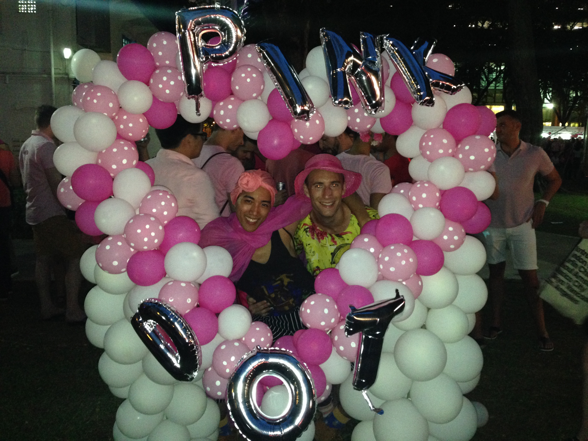
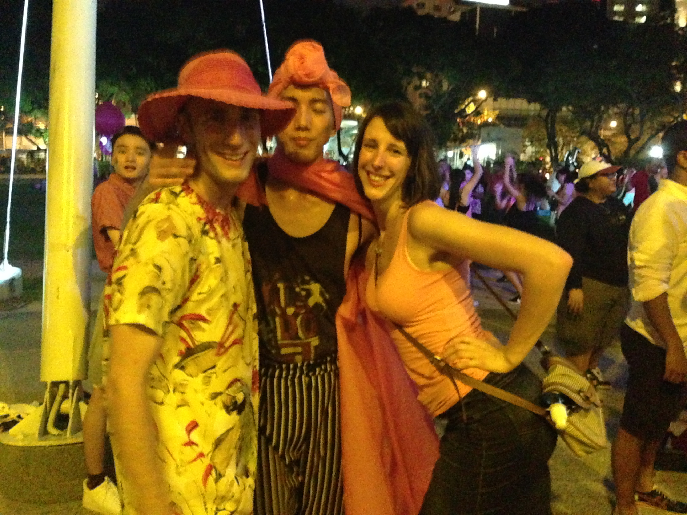

Pink Dot is the equivalent of the pride parade in other parts of the world. It's essentially one big get together of all these gay people, and their avid supporters, in Hong Lim Park, one of the only places of free speech in Singapore. Well, free in the sense that you can generally say what you want, but you have to get your messages approved by the government first. Sorry folks, just how it works here. The reason 'parade' is underlined is because the majority of this celebration is secular and apolitical: there's no insurgence by the community to overturn 377a which is the anti-sodomy (essentially anti-gay) law, since that's a losing battle on the political front. Rather, it's an attempt to normalize the gay experience in the Singaporean community; in some ways, its own activism.
Anyway, in typical apolitical fashion, what we did was just got together with a bunch of gay guys and token straight girls, had a bunch of food, shits, and laughs, and then headed to the actual celebration of Pink Dot. Let's start from the beginning..
It's about 1 p.m. and the kickoff at one of our friend's place is starting off. We weren't expecting much, a little bit of booze here or there, maybe some picnic food. But, these guys went all out. There was a barbecue catering service, with a guy from National Service (NS) cooking for a bunch of gays, a bunch of alcohol, and of course, everyone was flaring in pink. We walked in and got an instant tan from the reflection of light. So, we start off there, boozing and eating. At some points, tableclothes are torn off tables and worn, a bunch of people start doing drag, and everyone is tipsy/drunk and having a good time. Can't remember half the people I met, but I'm sure they were all just lovely. Lovely enough, at least, for me to remember that they weren't (if they were). The shenans continue until about 6 p.m., when a charter bus was hired to take us to Hong Lim Park. I've never taken a charter bus in Singapore. There's a first time for everything.

We hop on the bus, slowly getting people to trickle onto it as they tumble around, and we lose some of the herd along the way: various people going home, various people finding other means to get to the Park. On the bus, this one guy starts pouring shots into everyone's mouths like a mama bird, so, you know, we're down for that. And, every bus ride with the gays is not complete without some karaoke to *probably* Katy Perry, Madonna, Cher, or any other gay icon for the past 30 years. It's a laugh, and everyone is just sat on top of each other having a good time. It's that charter bus ride you always wanted to have for a field trip, but never did because teachers are no fun. Dreams come true.
Arriving, we settle down in one corner of the park, and slowly gather. In that migration, we lost a lot of people from the group, but, I'm sure they're all ok. One of the people we lost was our roommate, but they had just gone back to the house, so, all good. All accounted for.
A funny part about Pink Dot is that foreigners technically can't be in the celebration when the actual 'Pink Dot' event is taking place. That is, everyone gets in the middle and shines a small pink flashlight, effectively creating a small pink dot (OMG, it makes sense) to the contrast of the dark, leafy foliage nearby. Although foreigners technically can't participate, this is alleviated by a small PSA announcement telling foreigners to "get out" and then, if you stay or not, there's no real way of tracking you down. Cuz of this, we settled on the outskirts of the main park. And, someone was smart enough to bring a styrofoam cooler of all the alcohol at the apartment, so we were set for the night! There were a couple of speeches, and then finally when the pink dot event came I went into the middle to join in. The atmosphere was good, a great turnout of people as well and seeing grassroots movements of the LGBT community here was great.

So, the rest of the group decided to hop over to another bar; we get the name but decide to hang around a bit since there was still some music blasting, and dancing at the main stage. Jane, Thorin, and I just stay there for the rest of the night dancing in a tipsy state. At some point, drunk, we try to go find the bar that we were supposed to meet the other people with. It takes us about a good hour or so to roll up, strolling through Chinatown and the like. When we get there we don't see anyone actually there. What?? OK, whatever, after that we just walk home. You have to learn to pick your battles. The night had already been well-spent and we wanted to leave it on a high note. Oh, I think there was one period where we were sat on the ground having some Burger King.. the rest of the night, however, was a blur. Happy Pink Dot -- see you next year.